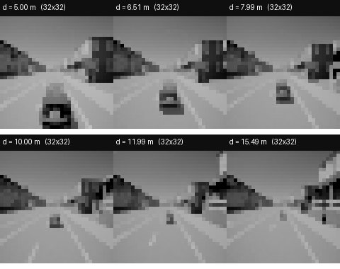
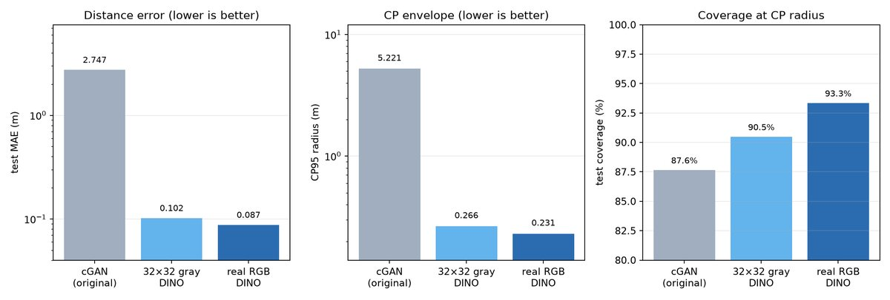
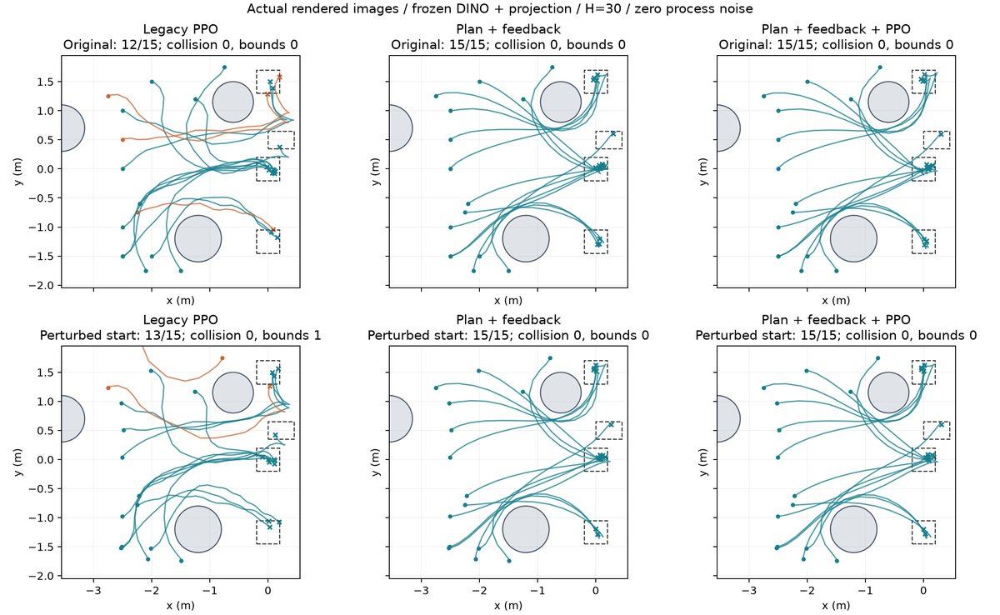

图片库：精选输入与结果
只放缩略图；原始数据在结果包/服务器。
只放精选缩略图；原始 24k/3.6k 图片在服务器/结果包中，不复制进站点。

AEBS 真实 RGB
6 个距离/天气组合；640×640 输入。

AEBS 32×32 灰度
旧前端对照；同一任务。

前端误差对比
cGAN / 灰度 / 真实 RGB 的 MAE、CP、覆盖。

车道输入
不同 (e,θ,κ) 的 192×192 渲染。

车道闭环
patch-DINO + PPO 的轨迹。

车道轨迹 CP
校准/留出最大误差与完整覆盖数。

停车场 SBC
结构化神经 SBC / 安全集。

停车场轨迹
规划反馈闭环对比。

机器人输入
三维视觉场景。

机器人轨迹
开发图像闭环。

机器人反例
CP 盒内攻击/越界示例。